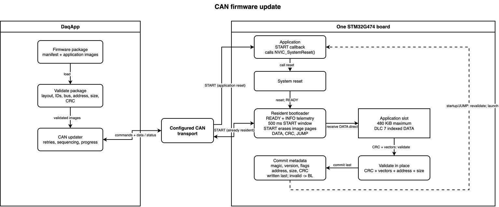
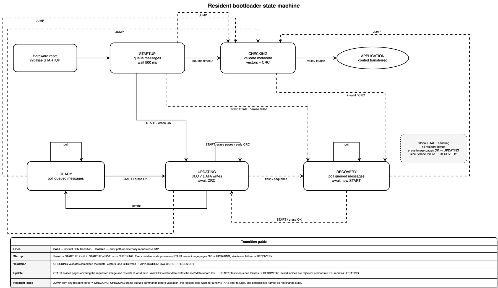
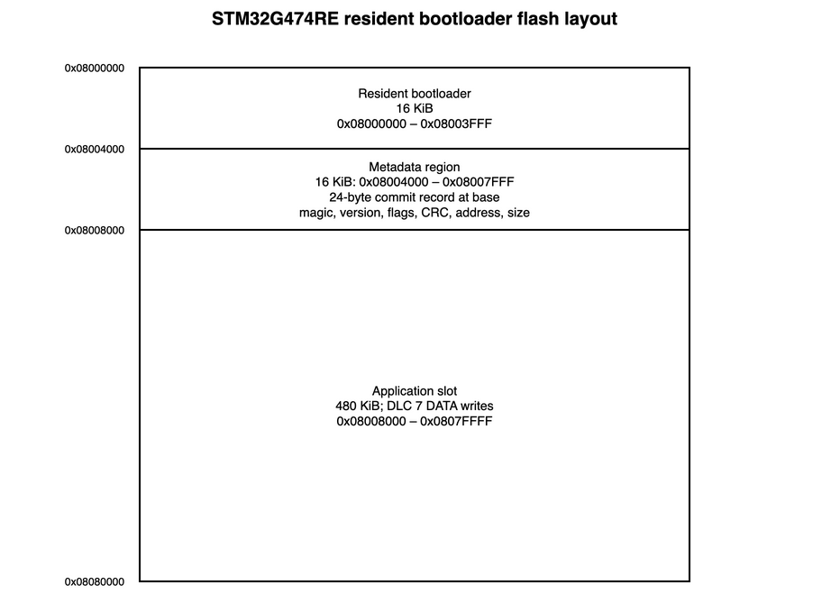

- Generated by
 1.12.0
1.12.0
|
PER Firmware
|
The resident STM32G474RE bootloader validates application images written to the application slot over each board's configured CAN transport. Board images define their CAN IDs, bus, baud rate, and pin mapping. CRC detects corruption; it does not authenticate firmware.


| Path | Responsibility |
|---|---|
main.c | Boot decision and recovery loop. |
bootloader/ | Update state machine, flash, CRC, and application hand-off. |
node_defs.h | Per-board single-transport configuration. |
../../common/bootloader/ | Shared protocol, metadata, and application reset callback. |
At startup, the bootloader initializes CAN, advertises READY, and polls for START for 500 ms. On timeout it validates metadata, vectors, and CRC before launch. A START that fails size or erase validation enters recovery; an invalid image remains resident.
START. A bootloader-aware application calls NVIC_SystemReset(); a resident bootloader treats the frame as an update request.START(image_size) within 500 ms. START invalidates metadata, erases the image pages, and accepts indexed words. A resident bootloader performs the same operation immediately and returns ACK(size).CRC(expected_crc) validates the image, vectors, and CRC, then writes metadata.JUMP validates the committed image and launches it.An interrupted transfer leaves metadata invalid. Resets during programming keep the bootloader resident; vector and CRC checks reject partial images.
START, CRC, JUMP, DATA, and response IDs come from can_library/configs; front and rear driveline use separate IDs. Each command is a separate CAN message with a four-byte little-endian argument. DATA uses a 24-bit little-endian word index followed by four word bytes (DLC 7); resident firmware also accepts the legacy DLC 6 frame with a 16-bit index.
| Message | Argument | Result |
|---|---|---|
START | Word-aligned image size. | Invalidates metadata, erases the complete flash pages covering the image, and returns ACK(size). |
CRC | Expected CRC. | Validates the application image in place and returns ACK(calculated_crc). |
JUMP | Zero argument. | Launches or returns ERROR/ADDRESS. |
| Status | Meaning |
|---|---|
READY | Bootloader is listening; detail is the protocol version. |
ACK | Command accepted. |
ERROR | Locked, sequence, flash, size, or address failure. |
CRC_ERROR | Application image CRC mismatch. |
Words are sequential; duplicate indices are ignored and gaps cancel the transfer. The receive interrupt queues frames; BL_poll() handles flash and CRC in main context. The FSM handles startup without blocking or reset-cause state.

The STM32G474RE map reserves 16 KiB for the resident bootloader and 16 KiB for metadata, followed by the full 480 KiB application slot at 0x08008000 through 0x0807FFFF. No flash remains reserved after the application slot.
Before launch, BL_checkAndBoot() requires valid metadata, a stack pointer in SRAM, a Thumb reset handler inside the image, and a matching application CRC. The package builder, DaqApp, and target use the same word-based STM32 CRC.
| Symptom | Check |
|---|---|
No READY | Resident image, wiring, board configuration, and command ID. |
ERROR/SEQUENCE | Restart from word zero. |
CRC_ERROR | Compare the target CRC and package image. |
ERROR/FLASH | Power and flash protection. |
ERROR/ADDRESS | Linker layout, metadata, and vectors. |
The protocol has no authentication or rollback. Keep power stable and retain a known-good resident bootloader.